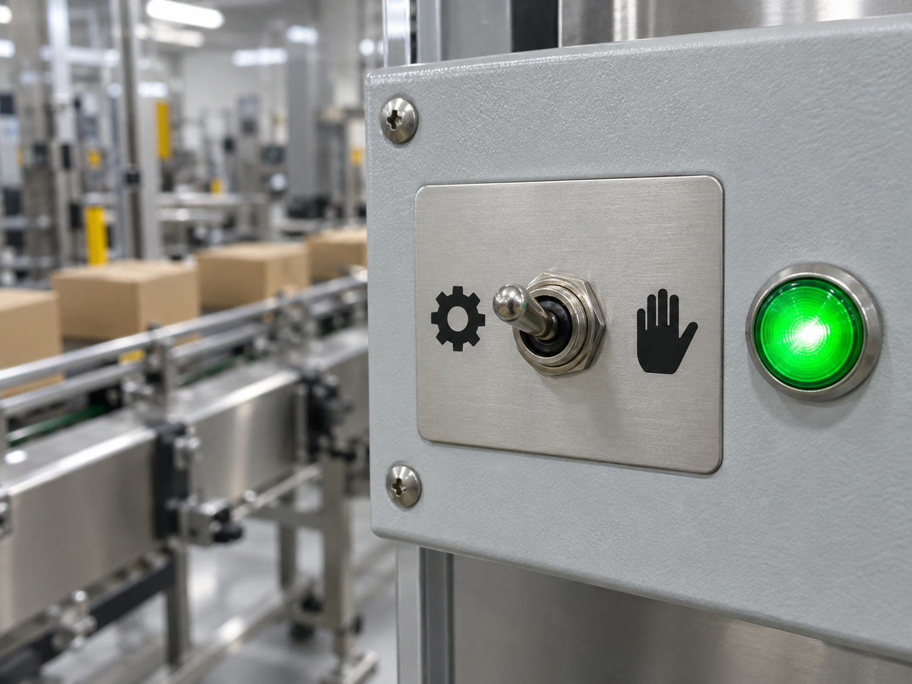
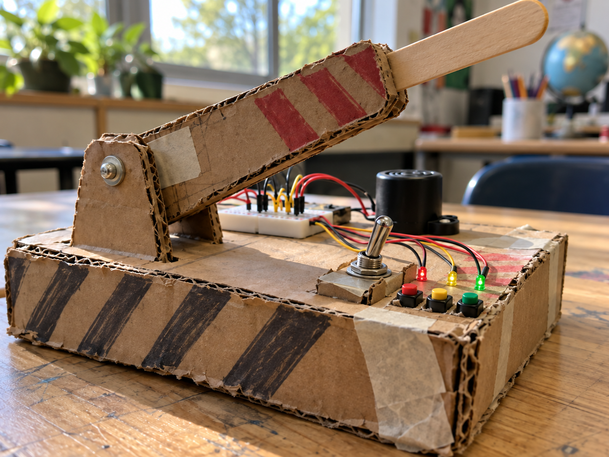
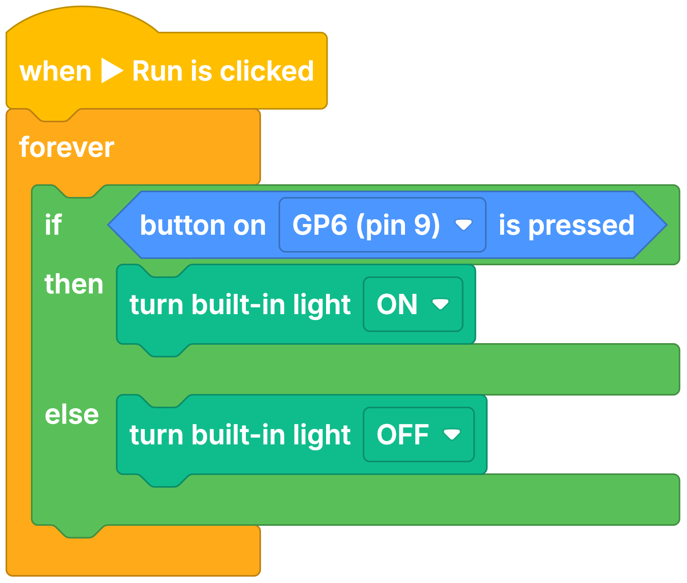

Auto/manual selector
DetectRead selector position
DecideIs automatic mode selected?
DoRun the selected mode
A toggle switch stays in the position you move it to, unlike a push button.
Its centre COM leg connects to one outside leg in each position.
It is useful when a project needs a lasting on/off choice or two modes.


